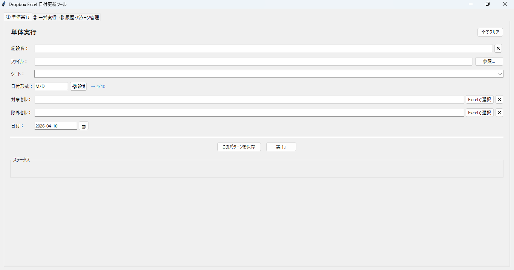
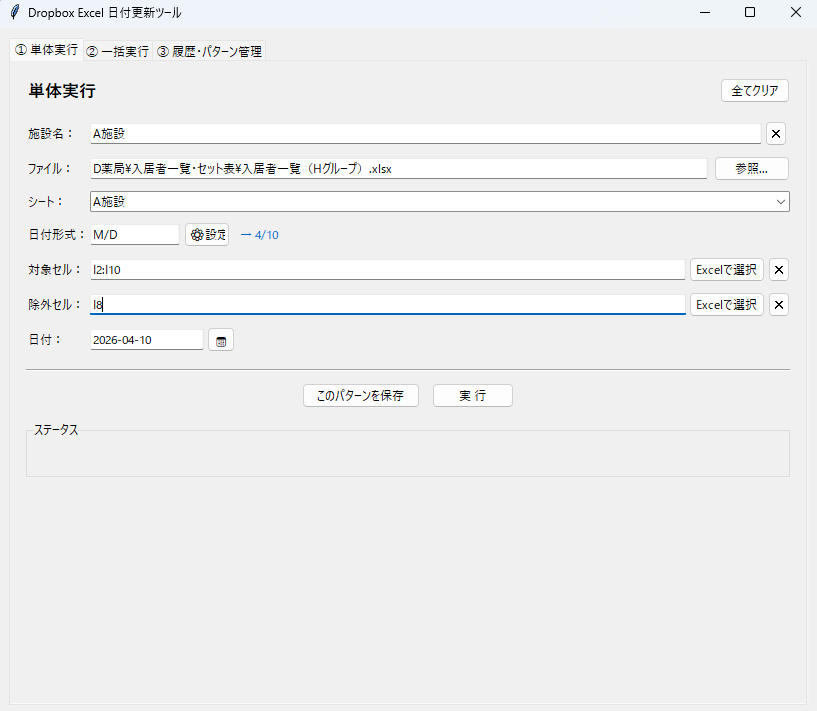
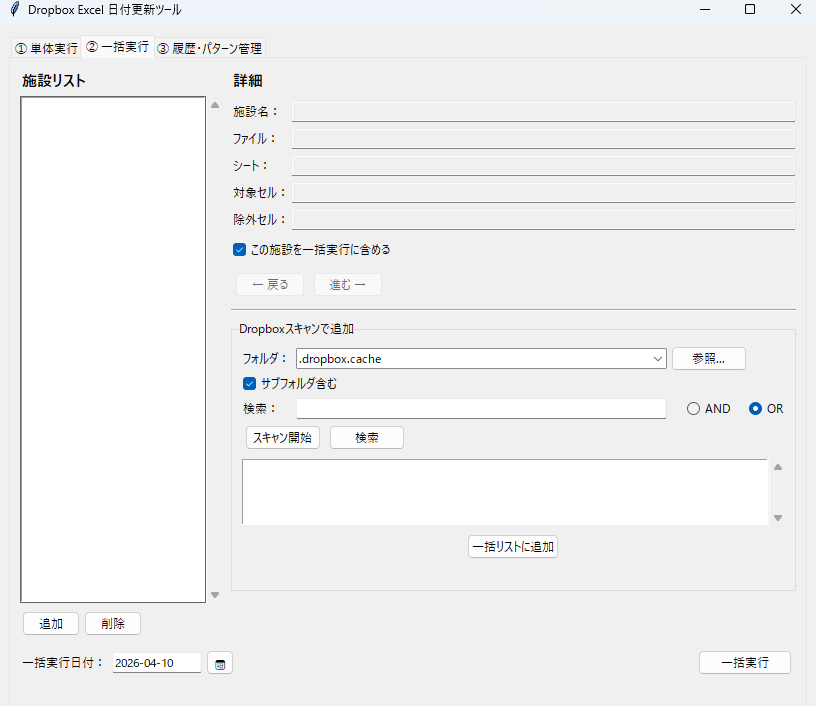
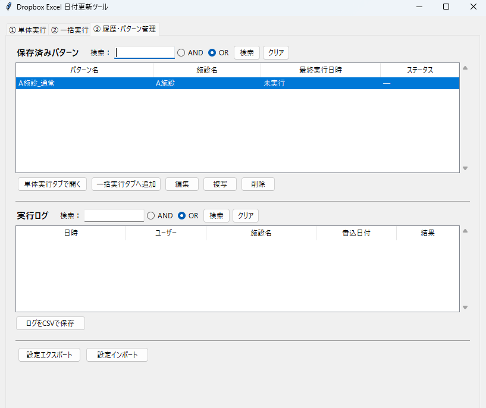

毎日・毎月の Excel 日付入力 を自動化。
Dropbox 上の Excel ファイルへ、指定セルに日付を一発で書き込む
Windows 向けデスクトップツールです。
Features
介護・医療施設・バックオフィスなど、Dropbox を使って Excel を管理している方のために設計しています。
H3:H20 / I2, H3:H20）Screenshots
シンプルで直感的な UI。初めて使う方でも迷わず操作できます。

main-overview.png
single-run-tab.png
batch-run-tab.png
pattern-management-tab.pngQuick Start
Python 環境をお持ちの方は、4 ステップで起動できます。
環境を用意したくない方は main.exe をそのままお使いください。
# ライブラリをインストール pip install -r requirements.txt # 設定ファイルを作成 copy config.xlsx_date_targets.sample.json config.xlsx_date_targets.json # config.xlsx_date_targets.json を # テキストエディタで編集して施設情報を入力 # 起動 python main.py
Requirements
Windows 専用ツールです。以下の環境をご確認ください。
Documentation
操作説明書（PDF）から GitHub リポジトリまで、関連リソースをまとめました。
Notes
config.xlsx_date_targets.sample.json を config.xlsx_date_targets.json にコピーし、施設名・ファイルパス・シート名を編集してください。このファイルは環境ごとに個別の設定が必要です。